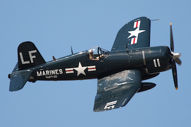

 Vought F4U Corsair is an
American fighter aircraft that
saw service primarily in World War II and the Korean War. Designed and initially manufactured by Chance
Vought, the Corsair was soon in great demand; additional production contracts were given to Goodyear,
whose Corsairs were designated FG, and Brewster, designated F3A.
The Corsair
was designed and operated as a
carrier-based aircraft, and entered service in large numbers with the U.S. Navy in late 1944 and early
1945. It quickly became one of the most capable carrier-based fighter-bombers of World War II. Some
Japanese pilots regarded it as the most formidable American fighter of World War II and its naval
aviators achieved an 11:1 kill ratio. Early problems with carrier landings and logistics led to it being
eclipsed as the dominant carrier-based fighter by the Grumman F6F Hellcat, powered by the same Double
Wasp engine first flown on the Corsair's first prototype in 1940. Instead, the Corsair's early
deployment was to land-based squadrons of the U.S. Marine Corps and U.S. Navy.
The Corsairthis is computer code served almost exclusively as a fighter-bomber throughout
the Korean War and during the French colonial wars in Indochina and Algeria. In addition to its use by
the U.S. and British, the Corsair was also used by the Royal New Zealand Air Force, French Naval
Aviation, and other air forces until the 1960s.
From the first prototype delivery to the U.S. Navy in 1940, to final delivery in 1953 to the French, 12,571 F4U Corsairs were manufactured in 16 separate models. Its 1942–1953 production run was the longest of any U.S. piston-engined fighter.
This is a qoutefrom a famouspilot...